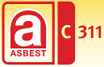
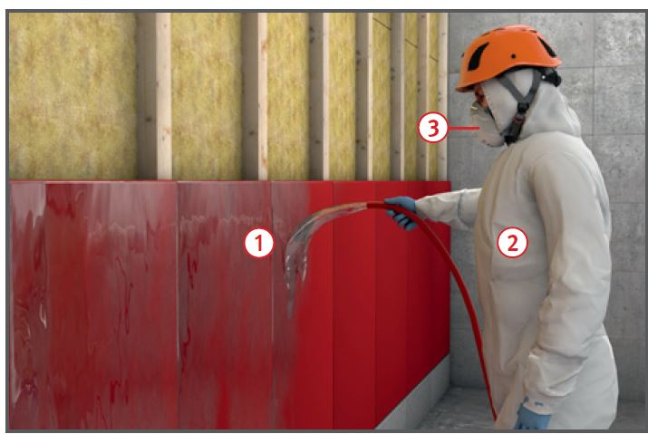
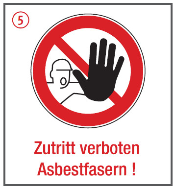
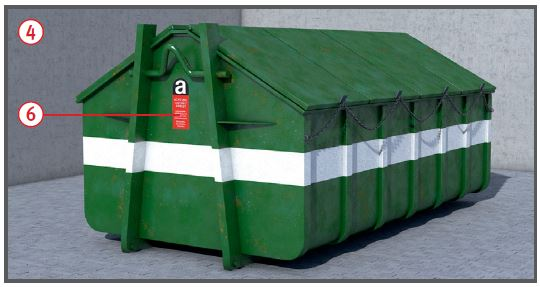

Asbestzementprodukte
|

|

Gefährdungen
- Asbestfasern können bis in die
Alveolen der Lunge eingeatmet werden und eine Asbestose, Lungenkrebs oder ein Pleuramesotheliom (Tumor des Bauch- und Rippenfells) auslösen.
Allgemeines
- Von stark gebundenen Asbestzementprodukten
gehen im eingebauten Zustand in der Regel keine Gefahren aus.
- Werden dagegen Asbestzementprodukte angebohrt, zerschlagen oder unsachgemäß gereinigt, können erhebliche Fasermengen freigesetzt werden.
- Die Bearbeitung mit oberflächenabtragenden Geräten, wie z. B. Abschleifen, Hoch- und Niederdruckreinigen oder Abbürsten, ist deshalb unzulässig.
- Reinigung und Überholungsbeschichtung nur zulässig an Außenwandflächen bei völlig intakter Beschichtung. Auf Dächern verboten.
Schutzmaßnahmen
Technische und organisatorische Schutzmaßnahmen
- Tätigkeiten mit Asbestzementprodukten
sind der Aufsichtsbehörde und der Berufsgenossenschaft schriftlich anzuzeigen.
- Gefährdungsbeurteilung mit
Arbeitsplan aufstellen und zusammen mit der Anzeige der zuständigen Behörde (z. B. Gewerbeaufsichtsamt) vorlegen.
- Angaben z. B. über:
- Art und Dauer der Arbeiten,
- Arbeitsablauf und vorgesehene technische Schutzmaßnahmen,
- persönliche Schutzausrüstungen,
- Dekontamination der Beschäftigten,
- Abfallbehandlung und Entsorgung.
- Betriebsanweisung aufstellen mit Angaben z. B. über:
- Arbeitsbereiche, Arbeitsplatz, Tätigkeit,
- Gefahren für Mensch und Umwelt,
- Schutzmaßnahmen, Verhaltensregeln und hygienische Maßnahmen,
- Verhalten im Gefahrfall,
- Erste Hilfe,
- sachgerechte Entsorgung.
- Beschäftigte anhand der Betriebsanweisung unterweisen.
- Jugendliche dürfen auch für Ausbildungszwecke nicht in Bereichen mit Asbestgefährdung beschäftigt werden.
- Arbeiten mit anderen Gewerken
koordinieren, um zu vermeiden, dass Unbeteiligte gefährdet werden.
- Arbeitsbereiche abgrenzen und mit Warnschildern kennzeichnen
 .
.
- Die Arbeiten sind unter Leitung eines sachkundigen Aufsichtführenden auszuführen (Sachkundenachweis). Dieser muss während der Arbeiten ständig anwesend sein.
- Beschichtete AZ-Wandbekleidungen
mit drucklosem Wasserstrahl bzw. entspanntem Wasser und weich arbeitenden Geräten (z. B. Schwamm) reinigen
 .
.
- Befestigungen sorgfältig lösen. Bauteile möglichst zerstörungsfrei ausbauen und nicht aus Überdeckungen oder über Kanten ziehen.
- Befestigungsmittel, Bruch- und Kleinteile, Dichtungsschnüre usw. in Behältern sammeln. Behälter kennzeichnen.


- Keine Schuttrutschen verwenden. Material nicht werfen, sondern von Hand oder mit Hebezeug transportieren.
- Bei Arbeiten an Außenwandbekleidungen Planen oder Folien zum Auffangen und Sammeln herabfallender Bruchstücke auslegen.
- Nach dem Entfernen der Asbestzementprodukte Untergrund gründlich absaugen oder feucht reinigen.
- Für Reinigungs- und andere Arbeiten mit Absaugung asbesthaltiger Materialien nur zugelassene und geprüfte Industriestaubsauger oder Entstauber der Staubklasse H mit Zusatzanforderung "Asbest" verwenden.
- Ausgebaute Asbestzementprodukte nicht wieder verwenden.
- Asbestabfälle nicht zerkleinern.
Persönliche und hygienische Schutzmaßnahmen
- Schutzanzug (mindestens EG-Kat. III, Typ 5)
 und Atemschutz mindestens mit Partikelfilter P2 oder partikelfiltrierende Halbmaske FFP2
und Atemschutz mindestens mit Partikelfilter P2 oder partikelfiltrierende Halbmaske FFP2  verwenden.
verwenden.
- Schutzkleidung bei Arbeitsunterbrechungen absaugen.
- Schutzkleidung und Atemschutz im Freien ablegen, um Verschmutzung der Unterkünfte zu vermeiden.
- Chemikalienschutzanzüge (ugs. Einweganzüge) nach Schichtende in besonders gekennzeichneten Behältern sammeln.
- Straßenkleidung getrennt von Arbeitskleidung aufbewahren.
- Bei Arbeitsunterbrechungen Hände sorgfältig reinigen, nach Arbeitsende gründlich duschen.
- In Arbeitsbereichen nicht essen, trinken oder rauchen.
Zusätzliche Hinweise zu Arbeiten auf Dächern
- Bei Arbeiten auf Wellplattendächern
lastverteilende Beläge oder Laufstege benutzen.
- Bei Absturzgefahr entsprechend
Gefährdungsbeurteilung Absturzsicherungen vorsehen.
- Nach Arbeiten an Dächern Dachrinnen reinigen und anschließend spülen.
Zusätzliche Hinweise für Arbeiten in Innenräumen
- Arbeitsräume geschlossen halten.
- Nach Beendigung der Arbeiten sämtliche Oberflächen gründlich absaugen und feucht wischen.
- Bei Nutzung einer Ein-Kammer-Schleuse vor Verlassen des Raumes einen mind. 30-fachen Luftwechsel durchführen.
- Können die Asbestzementprodukte nicht zerstörungsfrei ausgebaut werden, sind Raumabschottung und Unterdruckhaltung erforderlich. Außerdem ist mindestens eine Einkammerschleuse als Verbindung zum Arbeitsbereich zu verwenden.
- Benutzte Arbeitsmittel, z. B. Gerüste, durch Absaugen reinigen.
Zusätzliche Hinweise zur Abfallbehandlung
- Ausgebaute Asbestzementprodukte in geeigneten Behältern wie reißfesten Kunststoffsäcken, Big-Bags, geschlossenen oder mit Planen abgedeckten Containern
 sammeln, lagern und entsorgen.
sammeln, lagern und entsorgen.
- Behälter kennzeichnen
 und gegen den Zugriff Unbefugter sichern.
und gegen den Zugriff Unbefugter sichern.
- Asbestzementabfälle nur auf dafür zugelassenen Deponien staubfrei einlagern.
- Bei der Deponie Erkundigungen über weiter gehende Forderungen einholen.
Prüfungen
- "Verantwortliche Person im Betrieb" (VP) und "Aufsichtführende Person vor Ort" (AF):
- Sachkunde n. TRGS 519 mind. Anlage 4.
Ausnahmen für AF:
- bei Anwendung anerkannter emissionsarmer Verfahren n. TRGS 519 alternativ zur Sachkunde: Qualifikation "Q1E" nach TRGS 519 Anlage 10.
Arbeitsmedizinische Vorsorge
- Arbeitsmedizinische Vorsorge
nach Ergebnis der Gefährdungsbeurteilung
veranlassen (Pflichtvorsorge)
oder anbieten (Angebotsvorsorge).
Hierzu Beratung
durch den Betriebsarzt.
Beschäftigungsbeschränkungen
- Bei Tätigkeiten mit AZ-Produkten dürfen werdende Mütter nicht und Jugendliche nur unter folgenden Bedingungen beschäftigt werden:
- die Tätigkeit ist zur Erreichung ihres Ausbildungszieles erforderlich,
- sie findet unter Aufsicht eines Fachkundigen statt, und
- die Toleranzkonzentration für Asbest wird unterschritten.
07/2021